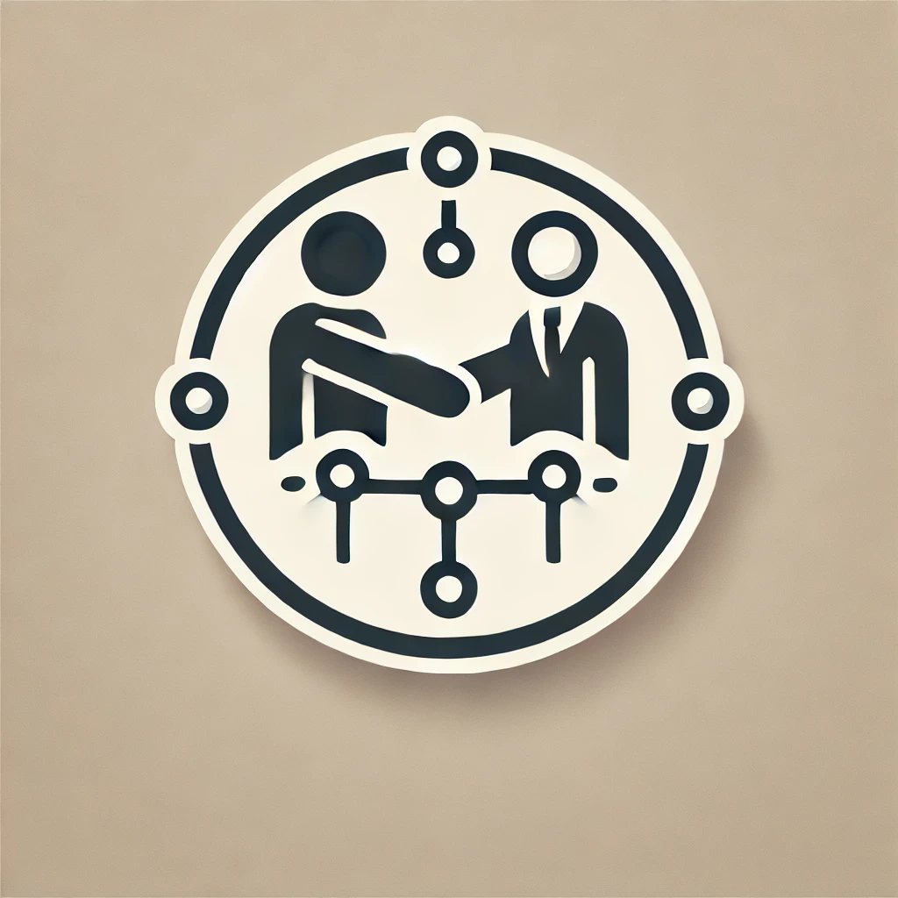
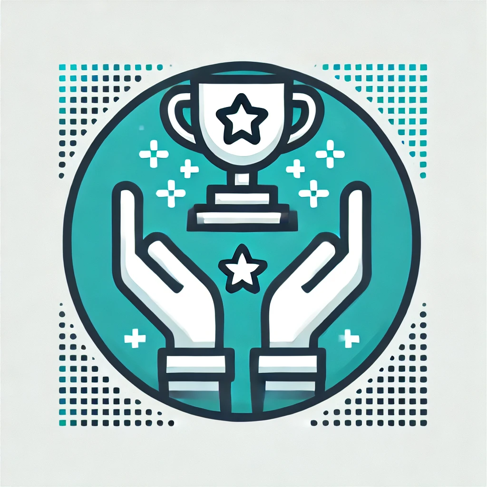
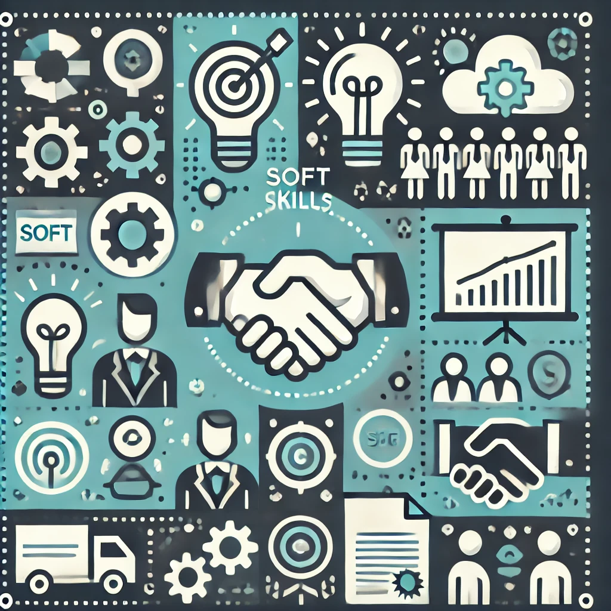
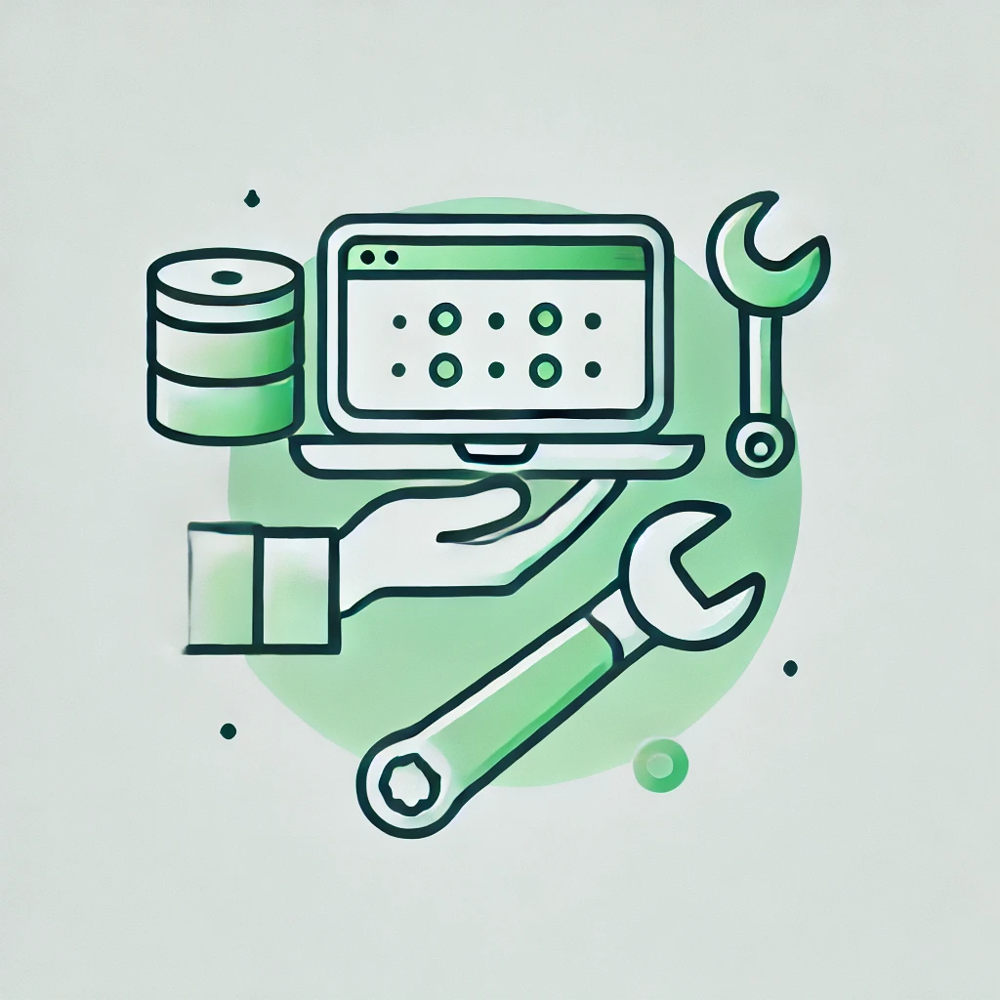
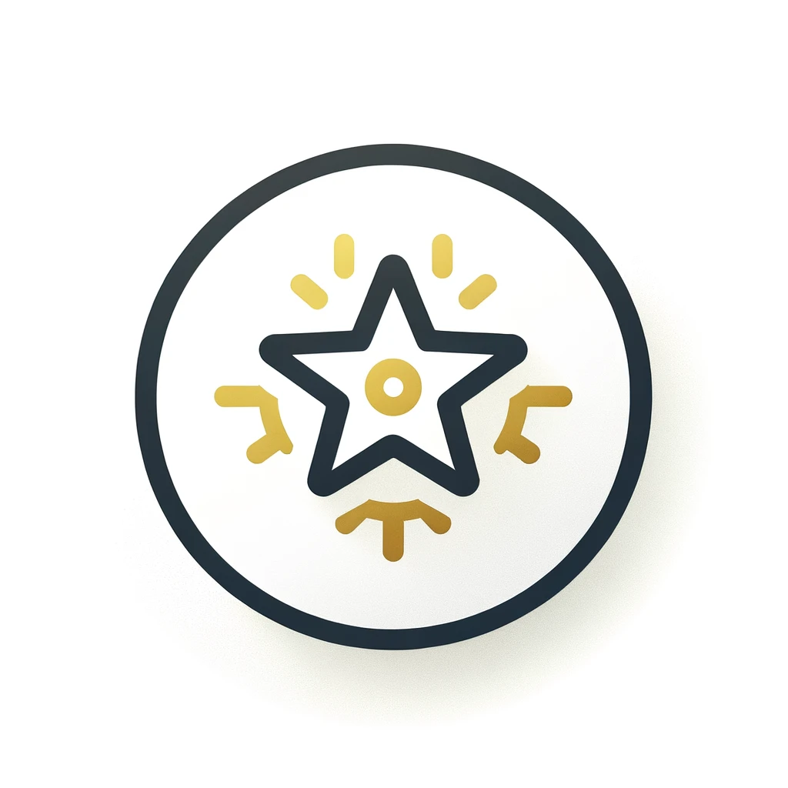

Skills Earned from Gaming
Cognitive and Strategic Skills
- Critical Thinking: Developing problem-solving approaches to win games.
- Decision-Making Under Pressure: Quick choices during high-stakes scenarios.
- Resource Management: Allocating and optimizing resources effectively, such as time, money, or materials.
- Strategic Planning: Creating long-term strategies to achieve objectives effectively.
- Multitasking: Handling multiple in-game tasks simultaneously without losing focus.
- Risk Assessment: Weighing potential gains and losses before making decisions.
- Pattern Recognition: Identifying trends or patterns to predict outcomes and make better decisions.
- Memory Enhancement: Strengthening recall abilities by managing multiple tasks or objectives.
Communication and Collaboration

- Teamwork: Collaborating with others to achieve a shared goal, essential in team-based work environments.
- Leadership Skills: Taking initiative, managing teams, and guiding group efforts toward success.
- Effective Communication: Leveraging clear verbal and written communication for seamless collaboration, both in gaming and professional settings.
- Conflict Resolution: Mediating disagreements and finding resolutions during team-based challenges.
- Empathy: Understanding others' perspectives to foster better relationships.
- Feedback Exchange: Providing and receiving constructive feedback to enhance performance.
- fdseqafe dawdadw
Technical and Digital Proficiency
- Technology Literacy: Navigating gaming platforms often improves comfort with software and digital tools. This skill translates to increased confidence in adopting workplace technologies.
- Learning and Adapting to New Technologies: Quickly grasping new systems, software, or interfaces, a skill developed through exposure to different gaming systems and environments.
Soft Skills

- Patience and Resilience: Learning from setbacks and persevering toward success.
- Adaptability: Adjusting to different game mechanics, strategies, and challenges.
- Focus and Concentration: Maintaining attention on tasks for extended periods without distractions.
- Stress Management: Staying calm and productive in high-pressure situations.
- Creativity: Thinking outside the box to solve problems or innovate new solutions.
- Goal-Oriented Mindset: Setting and achieving in-game objectives mirrors professional and personal goal-setting.
- Time Management: Balancing gaming with responsibilities teaches prioritization.
Skills Earned from Coding (Beginner Level)
Technical Skills

- HTML and CSS: Building websites with basic layouts and styling.
- JavaScript: Adding interactivity and dynamic functionality to websites.
- Version Control: Learning tools like Git for managing and collaborating on projects.
- Debugging: Identifying and resolving errors in code.
- Python: Basic programming and scripting experience.
- SQL: Database development and management.
Problem-Solving Skills

- Logical Thinking: Breaking down problems into smaller components to solve.
- Algorithmic Thinking: Understanding and writing simple algorithms.
Soft Skills from Coding

- Attention to Detail: Ensuring code correctness and efficiency by focusing on proper syntax and logic.
- Perseverance: Tackling challenging programming problems and learning from failed attempts.
- Adaptability: Learning to use new tools, frameworks, or languages to stay updated with technology.
Skills Earned from Online Courses
Technical Networking Skills

- Basic Networking Concepts: Understanding IP addresses, protocols, and DNS.
- Network Security Fundamentals: Learning about firewalls, encryption, and secure communication.
- Setting Up Local Networks: Configuring home or small office networks.
Cybersecurity Skills
- Ethical Hacking Basics: Learning how to identify vulnerabilities.
- Data Protection: Understanding methods to secure sensitive data.
Soft Skills from Networking

- Time Management: Scheduling and managing self-paced online courses.
- Adaptability to New Technology: Learning and experimenting with new networking tools.
- Export Control Knowledge: Adapting to regulations and systems for secure information handling.
Skills Earned from University Studies in Computing
Foundational Skills

- Introduction to Algorithms and Data Structures: Learning sorting, searching, and basic algorithms.
- Programming Basics: Writing code in languages like Python, Java, or C++.
- Introduction to Operating Systems: Understanding file systems, process management, and memory allocation.
Collaboration and Academic Skills

- Research Skills: Conducting research for academic projects.
- Collaboration in Group Projects: Working on group tasks and presentations.
Soft Skills from University

- Critical Analysis: Evaluating different computing solutions and technologies.
- Presentation Skills: Explaining technical concepts to non-technical audiences.
Skills Earned from Self-Improvement and Learning
Self-Paced Learning Skills

- Self-Discipline: Staying consistent with learning schedules.
- Curiosity: Exploring new areas of technology and gaming.
- Adaptability: Quickly grasping new concepts and technologies.
Technical Experimentation Skills
- Exploring Cloud Platforms: Getting familiar with AWS, Azure, or Google Cloud.
- Practicing Networking Labs: Configuring routers, switches, and virtual machines.
Skills Earned at Work
Leadership and Team Coordination
- Leadership Skills: Successfully guided teams by taking on covering roles as a team leader and first-line manager, ensuring smooth operations and achieving organizational goals.
- Training Abilities: Teaching and mentoring team members, ensuring they understand processes and meet performance expectations.
- Teamwork: Collaborating with colleagues to accomplish shared objectives and maintain a positive work environment.
Organizational and Problem-Solving Skills
- Planning & Organization Skills: Managing tasks, setting priorities, and meeting deadlines efficiently to ensure smooth workflows.
- Problem-Solving: Addressed and resolved administrative and operational challenges, ensuring adherence to standards and timelines.
- Meeting Deadlines: Ensured that all tasks, including reporting, data management, and operational directives, were completed within required timeframes.
IT and Technical Proficiency

- Microsoft Office Suite (Excel, Word, Outlook, Teams): Leveraged these tools for creating reports, data analysis, and effective collaboration across teams.
- Google Docs and Sheets: Utilized online tools to create and manage documents and spreadsheets collaboratively.
- SQL: Gained hands-on experience in managing databases, writing SQL queries, and executing administrative tasks.
- Computer Literacy: Confidently using technology, troubleshooting basic hardware/software issues, and staying updated with new tools.
Personal Attributes

- Fast Learner: Quickly adapted to new systems, such as WMx Warehouse Management System, and acquired skills like MySQL database development.
- Strong Work Ethic: Consistently demonstrated dedication, adaptability, and a proactive approach to achieving both individual and organizational goals.